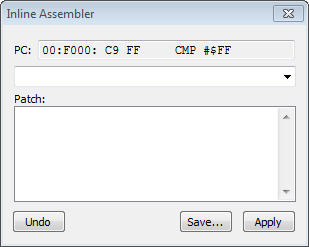

Содержание
Этот способ редактирования кода подходит для тех, кто не заучивает опкоды команд и хочет записывать команды текстом, а не байтами. Гораздо более удобный способ редактирования кода текстом - использовать другие ассемблеры, например ca65.
Окно будет полезно для редактирования адреса в командах условного перехода при переходе в обратную сторону.
Окно Inline Assembler вызывается левым кликом по серой полоске слева от адреса команды на адресах $8000-$FFFF во время паузы эмулятора.

Вверху окна показан начальный адрес вместе с командой и ее байтами (этот текст можно выделять и копировать). По этому адресу будет начинаться перезапись команд. Синтаксис у вводимых команд точно такой же, как они выглядят в Debugger'е, за тем исключением, что не обязательно вводить команды и байты заглавными буквами, а также лишние нули слева у байтов и адресов можно опустить.
При ошибке синтаксиса, а также если будет неправильно введен адрес для команды условного перехода из-за превышения лимита адреса, ты услышишь системный звуковой сигнал, а в названии окна будет сказано *Syntax Error*.
За 1 раз можно ввести 1 команду, затем нажми клавишу Enter для подтверждения ввода. Введенная команда отобразится в списке, а вверху окна будет показан следующий доступный адрес, байты и сама команда.
Когда закончишь вводить команды, нажми кнопку Apply, а затем закрой окно и сверься с Debugger'ом.
Кнопка Undo отменяет ввод команды по очереди, начиная с последней из списка. По-другому отредактировать список не получится.
После использования Inline Assembler изменения в ROM File не выделяются красным цветом, и эти изменения нельзя отменить через Ctrl + Z. Сохранить изменения нужно в Hex Editor'е во вкладке File.
Кнопка Save в окне Inline Assembler предположительно должна сохранять изменения в файле без необходимости сохранять через Hex Editor, но, по-видимому, она не работает.